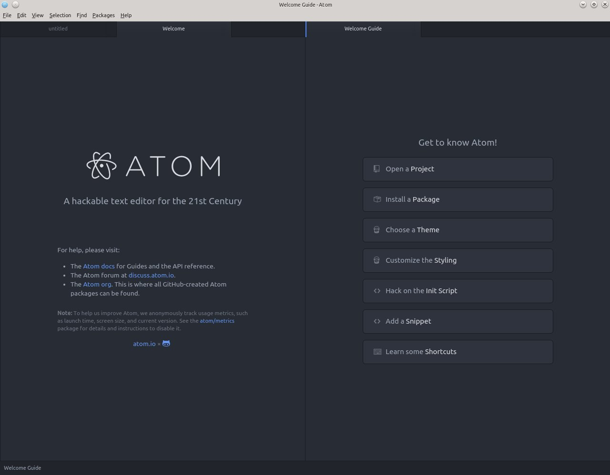

Tutti sono abituati ad "andare su Internet". Ma qui siamo tra gente che vuole capire cosa succede, no? Allora noi invece che "andare su Internet", apriamo il browser: il browser (to browse, scorrere, sfogliare) è un programma che serve per "sfogliare" Internet, ed in questo momento stiamo usando Firefox. Ma stavolta, invece che andare su uno dei nostri siti preferiti caricheremo un sito che sta sul nostro computer. Attenzione, questo sito è accessibile solo dal tuo computer, nessuno può vederlo da un altro computer o cellulare. Più avanti potremo fare anche questo però.
Nella barra dei segnalibri trovi HTML Adventure -> Parte 1, che abbiamo preparato per te. Cliccalo con il tasto destro e seleziona Apri in una nuova scheda e vedrai questo risultato. Poi torna qui.
Beh, questa è una pagina Web. Ok, ok, manca di colori, luci, suoni, animazioni, filmati e quant'altro. Ma è una pagina Web, e ora scopriremo cosa ci sta sotto!
Cosa usano i programmatori per fare il loro lavoro (e per divertirsi)? Usano un editor (to edit, modificare), ovvero un programma che serve a scrivere il codice. Apriamo il nostro editor e vediamo di cosa si tratta.
Clicchiamo sull'icona Atom che sta sul desktop e lanciamo l'editor!
Eccolo qui, il nostro migliore amico. Atom non è l'unico editor in circolazione, ce ne sono tantissimi! Ed il bello è che uno può scegliere quello che gli piace di più, perché tutti producono la stessa cosa, il codice. Per oggi però useremo quello che abbiamo scelto noi. In futuro sarai libero di fare come vorrai!
Da dentro Atom clicca il menu File -> Open file... (oppure premi Ctrl+O) e scegli ##base_dir##/part1/index.html.

Urca! Cos'è questo? Una lingua aliena? Benvenuto, questo che vedi è il linguaggio HTML (che è una sigla che vuol dire HyperText Markup Language, ovvero "linguaggio a marcatori per ipertesti"). Ecco questa è proprio una lingua aliena!!! Calma, calma, una cosa alla volta.
Prima di tutto sistemiamo un poco l'editor, che ci sono troppe cose aperte. Di default Atom apre due pannelli (panes) in parallelo, quindi adesso ne chiudiamo un po'. Vai sulla tab che dice Welcome, clicca con il tasto destro e seleziona Close Pane (chiudi il pannello). Poi clicca con il tasto destro sulla tab che dice index.html e seleziona Close other tabs
Il risultato finale della pulizia dovrebbe somigliare a questo
Ora torniamo al nostro file: puoi vedere nel codice aperto nell'editor qualcosa che vedi anche nella pagina Web? Ad esempio vedi quella riga dove dice <h1>La mia avventura</h1> (alla riga 11)? Facciamo così, proviamo a cambiarla e a vedere cosa succede!
Muoviti con i tasti freccia o con il mouse sulla quella riga e modifica il testo La mia avventura per farlo diventare La mia prima avventura!, compreso di punto esclamativo, mi raccomando, altrimenti non è abbastanza entusiasmante!
Attenzione: se fai un errore, ad esempio se cancelli il testo sbagliato, basta premere Ctrl+Z (anche più volte) per annullare la modifica.
Adesso il testo dovrebbe essere così
[...]
<body>
<h1>La mia prima avventura</h1>
<h2>1</h2>
[...]
Salviamo il file, altrimenti nessuno saprà mai che abbiamo fatto questa modifica.
Salva premendo i tasti Ctrl+S (oppure il menu File -> Save).
Adesso torniamo nel nostro browser e... accidenti è tutto come prima!!! Certo, niente paura. Il browser non si aggiorna automaticamente, in gergo si dice che non fa il refresh della pagina. Bisogna farlo manualmente, premendo il tasto F5. Ecco qui le nostre modifiche!
Ma insomma, cosa succede dentro tutto questo meccanismo? Molto semplicemente il browser apre il file che gli avete indicato, legge il codice HTML e, siccome lui sa parlare quella lingua, capisce cosa gli viene detto e lo fa. In gergo si dice che il browser fa il rendering della pagina.
Quindi qui si tratta di imparare questa lingua (l'HTML) per spiegare al browser cosa deve mostrare. Eccolo qui il segreto che non è più segreto: tutta Internet è scritta in questo linguaggio HTML! Anche questo tutorial!! Beh, non solo in HTML, per esempio ci sono altri due linguaggi che si usano e che si chiamano CSS e JavaScript, li incontreremo più avanti. Per ora stiamo con il nostro nuovo amico HTML.
HTML è tutto fatto da degli elementi che si chiamano tag, che in italiano si traduce con "marcatore" (ma tutti dicono tag): ad esempio <h1>, lo abbiamo appena incontrato. Come vedete i tag si aprono (<h1>) e poi si chiudono (</h1>) e tutto cio che sta dentro è il contenuto del tag. A seconda del nome del tag succede qualcosa al contenuto. Facile, no?
Ora che avete capito come funziona il meccanismo fate questa modifica.
Tornate nel file e cambiate il contenuto del tag <h2> da 1 a Capitolo 1.
Ricordatevi di salvare e poi andate nel browser e fate un refresh. Funziona?
Come tutte le lingue, anche l'HTML ha le sue regole. Se nel tema di italiano scrivi "Sonno tornato ha casa" probabilmente l'insegnante non sarà molto contento, e mi sa che a casa ci torni veramente, ma con un brutto voto.
Ecco, l'HTML ha delle regole, e una molto importante è che i tag aperti vanno chiusi! Fortunatamente l'editor ci aiuta a trovare questi errori, e altrettanto fortunatamente non ci rifila brutti voti! È proprio un valido aiutante, insomma. Se guardate la riga in fondo alla pagina dell'editor (si chiama status bar o barra di stato), vedrete che Atom dice No Issues (nessun problema) in un bel verde rassicurante.
Proviamo a vedere cosa succede se facciamo un errore.
Andiamo nel nostro file e cambiamo il tag <h1> in <h2> (solo questo, lasciamo </h1> così com'è).
Salviamo e... eccoli lì! I puntini rossi!! Ahi, ahi, qui c'è qualche sbaglio. In basso nella finestra compaiono anche due minacciosi bollini rossi con scritto "error", ma tranquilli, qui non c'è la pagella.
Il primo errore dice Tag must be paired, No start tag:[</h1>] at line 11 col 23 e se noti puoi cliccare sulla parte at line 11 col 23. Fallo e Atom ti farà vedere esattamente dove sta l'errore. Per chi facesse più fatica con l'inglese la frase dice che "I tag devono essere accoppiati, non c'è il tag di partenza per </h1>". Eh già, infatti inizia con <h2>, ce l'abbiamo messo noi!
Bene, riportiamo tutto come prima e salviamo. Se vuoi puoi premere Ctrl+Z per annullare la modifica.
Come vedete quando salvi tutto torna nella norma. Wow, per fortuna, niente bocciatura!
Ora è tempo che impariamo ad aggiungere qualcosa di nostro.
Andiamo all'inizio della riga dove c'è scritto </body> (attenzione, dove si chiude, non dove si apre) e inseriamo qualche "a capo" per farci un po' di spazio (quanti ne volete, non costano nulla!). Su una delle righe vuote scriviamo <p> (ignoriamo per ora il menu che salta fuori, lo useremo tra un attimo), poi scriviamo la frase Questo è un nuovo paragrafo e chiudiamo il tag con </p>. Salviamo e facciamo il refresh dal browser.
Otterrai una cosa simile a questa
[...] <p>Questo è un nuovo paragrafo</p> </body> [...]
Certo che questa storia di salvare e fare il refresh è un po' noiosa! Siccome i programmatori sono gente pigra si inventano mille modi per non fare fatica e in questo caso hanno inventato una cosa che si chiama preview (cioè anteprima).
Nell'editor clicca il tasto destro del mouse e seleziona Preview-Plus dal menu. Si aprirà un nuovo pannello con un piccolo browser integrato che ci mostra l'anteprima della pagina. Fantastico! Clicca il simbolo del fulmine in alto a destra per attivare il refresh automatico. Proviamolo subito.
Inserisci un nuovo paragrafo e salva.
Funziona? Dovrebbe risultare simile a questo
Però a ben guardare anche tutta la faccenda dei tag è un po' faticosa, tutti quei simboli >, < e / sono difficili da inserire. Chissà se l'editor ci può aiutare. Eccome!
Inserisci un nuovo paragrafo, ma ora invece di scrivere <p> scrivi solo p. Vedi che compare un menu? Premi il tasto TAB (quello a fianco alla Q, un tasto importantissimo!) e guarda cosa succede! L'editor ti ha automaticamente inserito il tag di apertura e quello di chiusura. Fantastico, no? Si chiama autocompletamento.
Mmmm, ma qui ci sono degli "a capo", come facciamo? Non toglierli!
Scrivi "Il mio terzo paragrafo" all'interno dei due tag e salva.
Dovrebbe venire una cosa così
[...]
<p>Questo è un nuovo paragrafo</p>
<p>
Il mio terzo paragrafo
</p>
</body>
[...]
Ma se guardiamo l'anteprima...
Cosa succede? Funziona anche se ci sono gli "a capo"? Ebbene sì, ecco un'altra regola di HTML, ovvero gli "a capo" sono completamente ignorati!
Prova ad inserire qualche "a capo" tra "terzo" e "paragrafo", salva e vedi cosa succede.
Abbiamo finito la prima parte del tutorial. Direi che di cose ne hai imparate! Facciamo un velocissimo elenco, giusto per vedere se ti ricordi tutto. Abbiamo imparato
- cosa è e cosa fa un browser
- cosa è e cosa fa un editor
- cosa sia il codice
- chi cavolo è l'HTML
- il significato oscuro della parola refresh
- l'altrettanto oscuro significato della parola rendering
- che esistono altri linguaggi chiamati CSS e JavaScript
- come è fatto un tag e cosa fa nella vita
- che si può risparmiare fatica con la preview e con l'autocompletamento!
- che gli "a capo" all'HTML non piacciono proprio